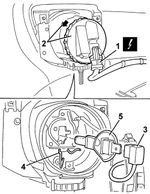
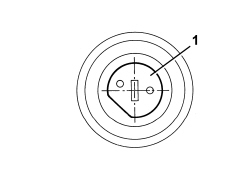

5540D14 L/H OR R/H FOG LIGHT BULB (ONE) - R+R
- Path
- Procedures > 55 ELECTRICAL EQUIPMENT > 5540 EXTERIOR LIGHTING > 5540D FOG LIGHTS > 5540D14 L/H OR R/H FOG LIGHT BULB (ONE) - R+R
- Kind
- repair procedure (removal / refitting; the operation number is the code)
- Applies to
- all engines; all production periods
- Interactive page
- https://sloeber94.github.io/elrnDB-aBrrSpdr/en/#/946002411
Applies to: all engines; all production periods
 Removing
Removing
 Refitting
RefittingOp. 7055B54 UNDER ENGINE PROTECTION/GUARD - R.R.
1. Disconnect the electrical connection for the lamp.
Description | Component |
|---|---|
LEFT FOG LIGHT | |
RIGHT FOG LIGHT |
2. Rotate the cover and move it slightly.
3. Disconnect the electrical connection for the bulb.
4. Undo the bulb retaining clip.
5. Extract the bulb.

Applies to: all engines; all production periods
Refitting
Removing- Check the condition of the bulb and make sure that it is clean.
1. Fit the bulb in the bulb holder. The correct position for the bulb is illustrated.

Applies to: all engines; all production periods
- Attach the bulb retaining clip.
- Connect the electrical connection for the bulb.
- Rotate the cover into place.
- Disconnect the electrical connection for the headlamp.